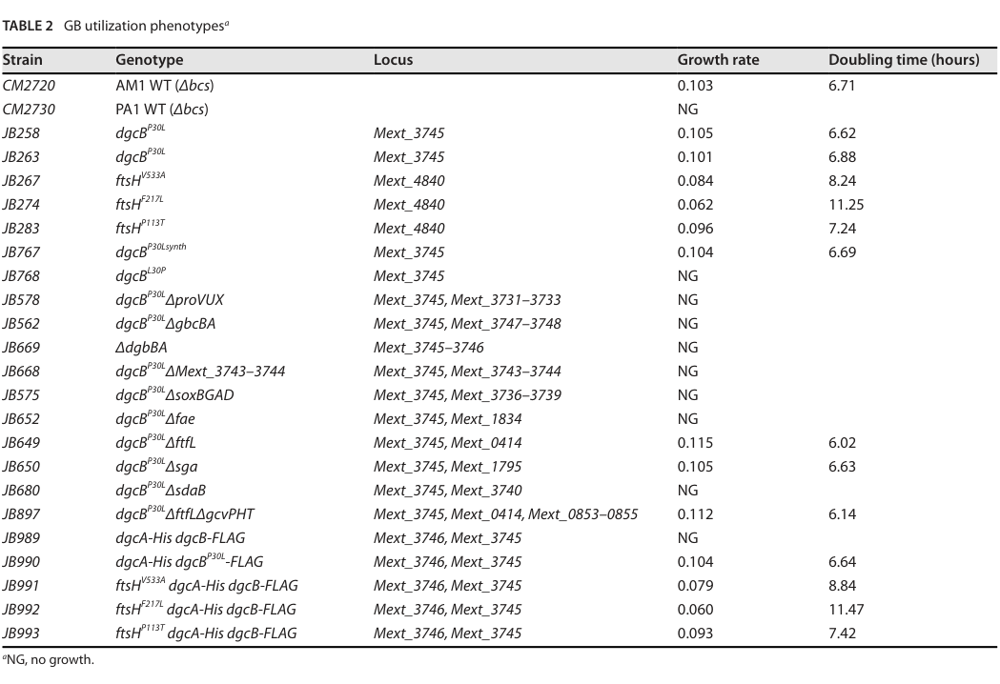

fae encodes the formaldehyde-activating enzyme (5,6,7,8-tetrahydromethanopterin hydro-lyase, EC 4.2.1.147), which catalyzes the first and critical step in formaldehyde detoxification and metabolism. The enzyme condenses formaldehyde with tetrahydromethanopterin (H4MPT) to form 5,10-methylenetetrahydromethanopterin, channeling formaldehyde into the central C1 metabolic pathway. While this reaction proceeds spontaneously, Fae catalyzes it at a substantially higher rate. The protein forms a homopentamer in the cytoplasm and is essential for growth on methanol, as it both detoxifies the highly reactive formaldehyde produced by methanol dehydrogenases and provides the substrate for downstream C1 metabolism. Crystal structure has been solved at 1.9 Å resolution, revealing the mechanism of H4MPT binding and formaldehyde activation. The enzyme exhibits optimal activity at pH 7-7.5 with a KM of 0.2 mM for formaldehyde.
| GO Term | Evidence | Action | Reason |
|---|---|---|---|
|
GO:0005737
cytoplasm
|
IEA
GO_REF:0000044 |
ACCEPT |
Summary: Correct - Fae is localized to the cytoplasm where it catalyzes formaldehyde activation [file:METEA/fae/fae-uniprot.txt, "SUBCELLULAR LOCATION: Cytoplasm"].
Reason: UniProt records cytoplasmic localization from cell-fractionation work (PubMed:11073907), and the falcon deep research independently places the Fae reaction in the cytosol, where intracellular formaldehyde condenses with H4MPT.
Supporting Evidence:
file:METEA/fae/fae-deep-research-falcon.md
formaldehyde entering the cytoplasm condenses with H4MPT
|
|
GO:0006730
one-carbon metabolic process
|
IEA
GO_REF:0000043 |
ACCEPT |
Summary: Correct - Fae is central to C1 metabolism, catalyzing the first step in formaldehyde processing [file:METEA/fae/fae-uniprot.txt, "One-carbon metabolism" and "essential enzyme for methylotrophic energy metabolism"].
Reason: The falcon deep research confirms Fae performs the first committed step of the H4MPT-linked C1 transfer pathway, channeling the C1 unit into central one-carbon metabolism. fae null mutants cannot grow on methanol, demonstrating the central metabolic role.
Supporting Evidence:
file:METEA/fae/fae-deep-research-falcon.md
Fae performs the **first committed step** of the **H4MPT-linked formaldehyde oxidation/detoxification pathway** in AM1
file:METEA/fae/fae-deep-research-falcon.md
fae null mutants are incapable of growth on methanol
|
|
GO:0009636
response to toxic substance
|
IEA
GO_REF:0000043 |
ACCEPT |
Summary: Correct - Fae detoxifies formaldehyde, a highly reactive and toxic metabolite [file:METEA/fae/fae-uniprot.txt, "essential enzyme for...formaldehyde detoxification"].
Reason: The falcon deep research documents the genetic basis for the detoxification role - fae mutants show methanol sensitivity during growth on succinate, interpreted as a failure to detoxify formaldehyde produced from methanol oxidation.
Supporting Evidence:
file:METEA/fae/fae-deep-research-falcon.md
methanol sensitivity during growth on succinate
|
|
GO:0016051
carbohydrate biosynthetic process
|
IEA
GO_REF:0000002 |
REMOVE |
Summary: Incorrect - While Fae works with H4MPT (which contains a pterin moiety), it does not participate in carbohydrate biosynthesis. Its function is formaldehyde activation for C1 metabolism.
|
|
GO:0016829
lyase activity
|
IEA
GO_REF:0000043 |
MODIFY |
Summary: The direction is correct but the term is over-general. Fae is EC 4.2.1.147, a hydro-lyase (the .2.1 EC subclass corresponds to hydro-lyases that eliminate water), and the UniProt RecName is "5,6,7,8-tetrahydromethanopterin hydro-lyase" [file:METEA/fae/fae-uniprot.txt, "5,6,7,8-tetrahydromethanopterin hydro-lyase"]. The reaction condenses formaldehyde with H4MPT to methylene-H4MPT; in the lyase direction it eliminates water across a carbon-oxygen bond. The more specific MF term GO:0016836 (hydro-lyase activity) better captures this than the root-level GO:0016829 (lyase activity).
Reason: GO:0016829 (lyase activity) is too general; GO:0016836 (hydro-lyase activity, "cleavage of a carbon-oxygen bond by elimination of water") precisely matches the EC 4.2.1 subclass and the UniProt hydro-lyase designation. No GO MF term exists for the exact EC 4.2.1.147 reaction, so hydro-lyase activity is the most specific applicable term.
Proposed replacements:
hydro-lyase activity
Supporting Evidence:
file:METEA/fae/fae-deep-research-falcon.md
condensation of free formaldehyde with the C1 carrier cofactor H4MPT** to form **methylene-H4MPT
|
|
GO:0016840
carbon-nitrogen lyase activity
|
IEA
GO_REF:0000002 |
REMOVE |
Summary: Incorrect - Fae is a hydro-lyase, not a carbon-nitrogen lyase. It catalyzes addition of formaldehyde to H4MPT with elimination of water, not cleavage of C-N bonds.
Reason: This InterPro2GO (GO_REF:0000002) prediction is a misclassification. The falcon deep research and UniProt both establish the reaction as condensation of formaldehyde with H4MPT (a hydro-lyase, EC 4.2.1.147), not a carbon-nitrogen lyase. The correct MF is GO:0016836 (hydro-lyase activity), proposed as the replacement for the over-general GO:0016829 above.
Supporting Evidence:
file:METEA/fae/fae-deep-research-falcon.md
condensation of free formaldehyde with the C1 carrier cofactor H4MPT** to form **methylene-H4MPT
|
|
GO:0046294
formaldehyde catabolic process
|
IEA
GO_REF:0000041 |
ACCEPT |
Summary: Correct - Fae catalyzes the first step in formaldehyde degradation via the H4MPT route [file:METEA/fae/fae-uniprot.txt, "One-carbon metabolism; formaldehyde degradation; formate from formaldehyde (H4MPT route): step 1/5"].
Reason: The falcon deep research confirms Fae performs the first committed step of the H4MPT-linked formaldehyde oxidation/detoxification pathway, the primary route for formaldehyde oxidation toward formate/CO2 in AM1.
Supporting Evidence:
file:METEA/fae/fae-deep-research-falcon.md
Fae performs the **first committed step** of the **H4MPT-linked formaldehyde oxidation/detoxification pathway** in AM1
|
The research report should be a detailed narrative explaining the function, biological processes, and localization of the gene product. Citations should be given for all claims.
You should prioritize authoritative reviews and primary scientific literature when conducting research. You can supplement
this with annotations you find in gene/protein databases, but these can be outdated or inaccurate.
We are specifically interested in the primary function of the gene - for enzymes, what reaction is catalyzed, and what is the substrate specificity? For transporters, what is the substrate? For structural proteins or adapters, what is the broader structural role? For signaling molecules, what is the role in the pathway.
We are interested in where in or outside the cell the gene product carries out its function.
We are also interested in the signaling or biochemical pathways in which the gene functions. We are less interested in broad pleiotropic effects, except where these elucidate the precise role.
Include evidence where possible. We are interested in both experimental evidence as well as inference from structure, evolution, or bioinformatic analysis. Precise studies should be prioritized over high-throughput, where available.
The target protein is UniProt Q9FA38 from Methylorubrum extorquens strain AM1 (syn. Methylobacterium extorquens AM1), annotated as 5,6,7,8-tetrahydromethanopterin hydro-lyase / formaldehyde-activating enzyme (Fae), EC 4.2.1.147. An authoritative review table mapping methylotrophy genes in AM1 lists fae in the H4MPT-dependent C1 transfer module with locus tag META1p1766, matching the UniProt-provided ordered locus name (ochsner2015methylobacteriumextorquensmethylotrophy pages 4-5). The same sources define Fae as the enzyme catalyzing/accelerating the initial condensation step that channels formaldehyde into the H4MPT-linked pathway (marx2003formaldehydedetoxifyingroleof pages 1-2, nayak2014geneticandphenotypic pages 3-4).
In aerobic methylotrophs such as M. extorquens AM1, methanol oxidation generates formaldehyde, a reactive and toxic intermediate that must be rapidly detoxified/processed to avoid growth inhibition (marx2003formaldehydedetoxifyingroleof pages 2-3, marx2003formaldehydedetoxifyingroleof pages 3-4). The dominant intracellular detoxification/oxidation route in AM1 is the tetrahydromethanopterin (H4MPT)-linked pathway (marx2003formaldehydedetoxifyingroleof pages 3-4).
Fae catalyzes (and strongly accelerates) the condensation of free formaldehyde with the C1 carrier cofactor H4MPT to form methylene-H4MPT (the entry metabolite for subsequent H4MPT-linked oxidation steps) (marx2003formaldehydedetoxifyingroleof pages 1-2, nayak2014geneticandphenotypic pages 3-4). While the formaldehyde–H4MPT condensation can occur spontaneously, the enzyme-catalyzed reaction is described as the physiologically relevant route and is required for robust methylotrophic growth in AM1 (marx2003formaldehydedetoxifyingroleof pages 1-2).
Substrate specificity (supported by available evidence): the key substrate is formaldehyde and the key cofactor/C1 acceptor is H4MPT (marx2003formaldehydedetoxifyingroleof pages 1-2, nayak2014geneticandphenotypic pages 3-4). The provided evidence does not include detailed kinetic constants (Km, kcat) or an explicit discussion of alternative aldehyde substrates; thus, substrate specificity beyond formaldehyde cannot be asserted here.
Fae performs the first committed step of the H4MPT-linked formaldehyde oxidation/detoxification pathway in AM1 (marx2003formaldehydedetoxifyingroleof pages 1-2, marx2003formaldehydedetoxifyingroleof pages 2-3). In physiological terms, Fae links methanol-derived (or other metabolism-derived) intracellular formaldehyde to downstream enzymes that oxidize C1 units (ultimately toward formate/CO2, as classically described for this module) while preventing toxic formaldehyde accumulation (marx2003formaldehydedetoxifyingroleof pages 3-4).
The H4MPT route is described as operating on formaldehyde that enters the cytoplasm, where it condenses with H4MPT (marx2003formaldehydedetoxifyingroleof pages 1-2). On that basis, the most defensible localization for the Fae reaction is intracellular/cytosolic. No direct subcellular fractionation or imaging evidence for Fae localization was identified in the retrieved evidence.
In M. extorquens AM1, fae null mutants are incapable of growth on methanol (marx2003formaldehydedetoxifyingroleof pages 2-3, marx2003formaldehydedetoxifyingroleof pages 3-4). This is strong genetic evidence that Fae is required for methylotrophic metabolism under the tested conditions and supports its central functional annotation (marx2003formaldehydedetoxifyingroleof pages 2-3).
A hallmark phenotype of AM1 mutants defective in the H4MPT-linked pathway (including fae mutants) is methanol sensitivity during growth on succinate, interpreted as a failure to detoxify formaldehyde produced from methanol oxidation (marx2003formaldehydedetoxifyingroleof pages 2-3, marx2003formaldehydedetoxifyingroleof pages 3-4). Quantitatively, Marx et al. used plate-based assays spanning methanol concentrations up to 125 mM, where 125 mM methanol abolished growth of tested H4MPT-pathway mutant strains, and reported inhibition differences at lower methanol (e.g., 1 mM methanol) (marx2003formaldehydedetoxifyingroleof pages 3-4). They also tested formaldehyde directly (down to 0.005 mM in the assay range) to probe toxicity sensitivity (marx2003formaldehydedetoxifyingroleof pages 3-4).
Marx et al. concluded the H4MPT-linked pathway is the primary formaldehyde oxidation/detoxification route in AM1 (marx2003formaldehydedetoxifyingroleof pages 3-4). This “primary route” framing is consistent with the idea that alternative formaldehyde-oxidation strategies can exist (or be engineered/introduced) but that, in the native AM1 network, H4MPT/Fae is central to handling cytosolic formaldehyde generated during methylotrophic growth (marx2003formaldehydedetoxifyingroleof pages 3-4).
A widely cited review on M. extorquens methylotrophy and biotechnology notes that an AM1 Fae structure has been determined (“structure of the tetrahydromethanopterin-dependent formaldehyde-activating enzyme (Fae) from M. extorquens AM1”), supporting the enzyme’s role in binding H4MPT and catalyzing the formaldehyde activation step (ochsner2015methylobacteriumextorquensmethylotrophy pages 7-9). The review also places fae/META1p1766 explicitly in the H4MPT-dependent module, reflecting community consensus on function and pathway placement (ochsner2015methylobacteriumextorquensmethylotrophy pages 4-5).
Because the dedicated structural paper itself was not retrievable in the current tool context, specific mechanistic/active-site claims (e.g., residue-level catalytic mechanism) are not reproduced here.
A 2024 Applied and Environmental Microbiology study shows that in Methylorubrum extorquens PA1, enabling glycine betaine (GB) utilization produces free formaldehyde, and that this formaldehyde is handled via methylotrophy-associated machinery including H4MPT-pathway genes (hying2024glycinebetainemetabolism pages 6-9, hying2024glycinebetainemetabolism pages 9-11). Critically, a strain carrying dgcB^P30L Δfae shows no growth (NG) on GB as sole carbon/energy source (Table 2) (hying2024glycinebetainemetabolism pages 4-6, hying2024glycinebetainemetabolism media ad9482fc). This provides modern, experimentally anchored support for the broader principle that Fae-mediated formaldehyde activation is not only relevant to methanol, but also to other methylated substrates whose catabolism releases formaldehyde.
Quantitative/statistical elements available from retrieved evidence: Hying et al. report a formaldehyde assay showing increased supernatant formaldehyde in GB-grown versus pyruvate-grown cultures (figure referenced in text) and tabulate growth phenotypes (including “NG” for Δfae) (hying2024glycinebetainemetabolism pages 6-9, hying2024glycinebetainemetabolism media ad9482fc). The retrieved text snippets do not provide the exact formaldehyde concentrations or p-values.
A 2023 Frontiers in Microbiology study on Methylobacterium aquaticum strain 22A describes that the H4MPT-linked pathway begins with Fae, and that strain 22A contains two fae homologs (fae1 and fae2); combined disruption of formaldehyde oxidation capacity (H4MPT and glutathione-linked components) produces strong formaldehyde toxicity phenotypes and methanol-associated growth defects (tani2023metabolismlinkedmethylotaxissensors pages 3-5). While not AM1-specific, it highlights contemporary interest in pathway redundancy and formaldehyde control in plant-associated methylotroph ecology.
A comprehensive review (2015; Applied Microbiology and Biotechnology) frames M. extorquens AM1 as a well-characterized methylotrophic platform with biotechnological applications and summarizes the genetic modules for methylotrophy, including the H4MPT-dependent pathway with fae/META1p1766 (ochsner2015methylobacteriumextorquensmethylotrophy pages 4-5). In application-oriented terms, Fae is part of the core “formaldehyde handling” machinery that must be functional (or deliberately rewired) when methanol or other formaldehyde-generating substrates are used as feedstocks (ochsner2015methylobacteriumextorquensmethylotrophy pages 4-5).
The 2024 glycine betaine work provides a concrete example of how plant-associated compounds (GB) can feed into formaldehyde metabolism and require Fae/H4MPT-dependent processing (hying2024glycinebetainemetabolism pages 6-9, hying2024glycinebetainemetabolism media ad9482fc). This supports real-world ecological relevance (phyllosphere carbon sources) and informs metabolic engineering: successful growth on such substrates requires maintaining efficient formaldehyde activation/oxidation capacity (hying2024glycinebetainemetabolism pages 6-9).
| Gene/protein | Verified identity | Reaction catalyzed | Substrates / cofactors | Pathway / module | Key genetic evidence in Methylorubrum extorquens AM1 | Recent 2024 evidence / broader relevance | Localization / compartment | Key references |
|---|---|---|---|---|---|---|---|---|
| fae; UniProt Q9FA38; locus META1p1766 / MexAM1_META1p1766 | Matches the canonical formaldehyde-activating enzyme (Fae) annotation in M. extorquens AM1; reviews/tables place fae/META1p1766 in the H4MPT-dependent C1 transfer module as a formaldehyde-activating enzyme (ochsner2015methylobacteriumextorquensmethylotrophy pages 4-5) | Catalyzes/strongly accelerates condensation of formaldehyde + tetrahydromethanopterin (H4MPT) to form methylene-H4MPT, the entry step into the H4MPT-linked oxidation route; spontaneous condensation can occur, but Fae is the physiologically important catalyst (marx2003formaldehydedetoxifyingroleof pages 1-2, nayak2014geneticandphenotypic pages 3-4) | Formaldehyde is the C1 substrate and H4MPT is the C1 carrier/cofactor acceptor; product is methylene-H4MPT feeding downstream H4MPT enzymes (marx2003formaldehydedetoxifyingroleof pages 1-2, nayak2014geneticandphenotypic pages 3-4) | Central entry enzyme of the H4MPT-linked formaldehyde oxidation/detoxification pathway, the primary route for formaldehyde oxidation in AM1 during methylotrophic growth; pathway converts toxic intracellular formaldehyde toward formate/CO2 via downstream H4MPT enzymes (marx2003formaldehydedetoxifyingroleof pages 1-2, marx2003formaldehydedetoxifyingroleof pages 2-3, marx2003formaldehydedetoxifyingroleof pages 3-4) | fae null mutants cannot grow on methanol and are methanol/formaldehyde sensitive during growth on succinate, supporting a formaldehyde detoxification role. In plate assays, all tested H4MPT-pathway mutants were unable to grow on methanol; 1 mM methanol inhibited pathway mutants and 125 mM methanol abolished growth of tested mutants in succinate-based assays (marx2003formaldehydedetoxifyingroleof pages 2-3, marx2003formaldehydedetoxifyingroleof pages 3-4) | In 2024, glycine betaine catabolism in M. extorquens PA1 was shown to generate free formaldehyde that must be processed by methylotrophy machinery; a dgcB^P30L Δfae strain showed no growth (NG) on glycine betaine, linking Fae-dependent H4MPT chemistry to detoxification/energy capture from non-methanol substrates that release formaldehyde (hying2024glycinebetainemetabolism pages 6-9, hying2024glycinebetainemetabolism pages 4-6, hying2024glycinebetainemetabolism media ad9482fc) | Evidence places the reaction in the cytoplasm / intracellular soluble compartment, because formaldehyde entering the cytoplasm condenses with H4MPT and the H4MPT pathway is described as the intracellular primary oxidation/detoxification route; no evidence for secretion or membrane localization was identified here (marx2003formaldehydedetoxifyingroleof pages 1-2) | Marx et al., 2003, J. Bacteriol. DOI: https://doi.org/10.1128/jb.185.23.7160-7168.2003 (marx2003formaldehydedetoxifyingroleof pages 1-2, marx2003formaldehydedetoxifyingroleof pages 2-3, marx2003formaldehydedetoxifyingroleof pages 3-4); Nayak & Marx, 2014, PLoS ONE DOI: https://doi.org/10.1371/journal.pone.0107887 (nayak2014geneticandphenotypic pages 3-4); Ochsner et al., 2015, Appl. Microbiol. Biotechnol. DOI: https://doi.org/10.1007/s00253-014-6240-3 (ochsner2015methylobacteriumextorquensmethylotrophy pages 7-9, ochsner2015methylobacteriumextorquensmethylotrophy pages 4-5); Hying et al., 2024, Appl. Environ. Microbiol. DOI: https://doi.org/10.1128/aem.02090-23 (hying2024glycinebetainemetabolism pages 6-9, hying2024glycinebetainemetabolism pages 4-6, hying2024glycinebetainemetabolism media ad9482fc) |
Table: This table summarizes the verified identity, catalytic role, pathway placement, localization, and key genetic evidence for Methylorubrum extorquens AM1 Fae (Q9FA38). It also includes recent 2024 evidence linking Fae-dependent formaldehyde handling to glycine betaine metabolism.
Fae (Q9FA38; META1p1766) is a cytosolic enzyme that catalyzes/accelerates the condensation of formaldehyde with H4MPT to form methylene-H4MPT, initiating the H4MPT-linked formaldehyde oxidation/detoxification pathway required for methylotrophic growth on methanol and for resisting formaldehyde stress in M. extorquens AM1 (marx2003formaldehydedetoxifyingroleof pages 1-2, marx2003formaldehydedetoxifyingroleof pages 2-3, marx2003formaldehydedetoxifyingroleof pages 3-4).
Hying et al. (2024) Table 2 provides direct phenotypic support that deleting fae abolishes growth on a formaldehyde-generating substrate (glycine betaine) in M. extorquens PA1 background, supporting the functional importance of Fae-mediated formaldehyde activation/processing (hying2024glycinebetainemetabolism media ad9482fc).
References
(ochsner2015methylobacteriumextorquensmethylotrophy pages 4-5): Andrea M. Ochsner, Frank Sonntag, Markus Buchhaupt, Jens Schrader, and Julia A. Vorholt. Methylobacterium extorquens: methylotrophy and biotechnological applications. Applied Microbiology and Biotechnology, 99:517-534, Nov 2015. URL: https://doi.org/10.1007/s00253-014-6240-3, doi:10.1007/s00253-014-6240-3. This article has 229 citations and is from a domain leading peer-reviewed journal.
(marx2003formaldehydedetoxifyingroleof pages 1-2): Christopher J. Marx, Ludmila Chistoserdova, and Mary E. Lidstrom. Formaldehyde-detoxifying role of thetetrahydromethanopterin-linked pathway in methylobacteriumextorquensam1. Journal of Bacteriology, 185:7160-7168, Dec 2003. URL: https://doi.org/10.1128/jb.185.23.7160-7168.2003, doi:10.1128/jb.185.23.7160-7168.2003. This article has 149 citations and is from a peer-reviewed journal.
(nayak2014geneticandphenotypic pages 3-4): Dipti D. Nayak and Christopher J. Marx. Genetic and phenotypic comparison of facultative methylotrophy between methylobacterium extorquens strains pa1 and am1. PLoS ONE, 9:e107887, Sep 2014. URL: https://doi.org/10.1371/journal.pone.0107887, doi:10.1371/journal.pone.0107887. This article has 48 citations and is from a peer-reviewed journal.
(marx2003formaldehydedetoxifyingroleof pages 2-3): Christopher J. Marx, Ludmila Chistoserdova, and Mary E. Lidstrom. Formaldehyde-detoxifying role of thetetrahydromethanopterin-linked pathway in methylobacteriumextorquensam1. Journal of Bacteriology, 185:7160-7168, Dec 2003. URL: https://doi.org/10.1128/jb.185.23.7160-7168.2003, doi:10.1128/jb.185.23.7160-7168.2003. This article has 149 citations and is from a peer-reviewed journal.
(marx2003formaldehydedetoxifyingroleof pages 3-4): Christopher J. Marx, Ludmila Chistoserdova, and Mary E. Lidstrom. Formaldehyde-detoxifying role of thetetrahydromethanopterin-linked pathway in methylobacteriumextorquensam1. Journal of Bacteriology, 185:7160-7168, Dec 2003. URL: https://doi.org/10.1128/jb.185.23.7160-7168.2003, doi:10.1128/jb.185.23.7160-7168.2003. This article has 149 citations and is from a peer-reviewed journal.
(ochsner2015methylobacteriumextorquensmethylotrophy pages 7-9): Andrea M. Ochsner, Frank Sonntag, Markus Buchhaupt, Jens Schrader, and Julia A. Vorholt. Methylobacterium extorquens: methylotrophy and biotechnological applications. Applied Microbiology and Biotechnology, 99:517-534, Nov 2015. URL: https://doi.org/10.1007/s00253-014-6240-3, doi:10.1007/s00253-014-6240-3. This article has 229 citations and is from a domain leading peer-reviewed journal.
(hying2024glycinebetainemetabolism pages 6-9): Zachary T. Hying, Tyler J. Miller, Chin Yi Loh, and Jannell V. Bazurto. Glycine betaine metabolism is enabled in methylorubrum extorquens pa1 by alterations to dimethylglycine dehydrogenase. Applied and Environmental Microbiology, Jul 2024. URL: https://doi.org/10.1128/aem.02090-23, doi:10.1128/aem.02090-23. This article has 6 citations and is from a peer-reviewed journal.
(hying2024glycinebetainemetabolism pages 9-11): Zachary T. Hying, Tyler J. Miller, Chin Yi Loh, and Jannell V. Bazurto. Glycine betaine metabolism is enabled in methylorubrum extorquens pa1 by alterations to dimethylglycine dehydrogenase. Applied and Environmental Microbiology, Jul 2024. URL: https://doi.org/10.1128/aem.02090-23, doi:10.1128/aem.02090-23. This article has 6 citations and is from a peer-reviewed journal.
(hying2024glycinebetainemetabolism pages 4-6): Zachary T. Hying, Tyler J. Miller, Chin Yi Loh, and Jannell V. Bazurto. Glycine betaine metabolism is enabled in methylorubrum extorquens pa1 by alterations to dimethylglycine dehydrogenase. Applied and Environmental Microbiology, Jul 2024. URL: https://doi.org/10.1128/aem.02090-23, doi:10.1128/aem.02090-23. This article has 6 citations and is from a peer-reviewed journal.
(hying2024glycinebetainemetabolism media ad9482fc): Zachary T. Hying, Tyler J. Miller, Chin Yi Loh, and Jannell V. Bazurto. Glycine betaine metabolism is enabled in methylorubrum extorquens pa1 by alterations to dimethylglycine dehydrogenase. Applied and Environmental Microbiology, Jul 2024. URL: https://doi.org/10.1128/aem.02090-23, doi:10.1128/aem.02090-23. This article has 6 citations and is from a peer-reviewed journal.
(tani2023metabolismlinkedmethylotaxissensors pages 3-5): Akio Tani, Sachiko Masuda, Yoshiko Fujitani, Toshiki Iga, Yuuki Haruna, Shiho Kikuchi, Wang Shuaile, Haoxin Lv, Shiori Katayama, Hiroya Yurimoto, Yasuyoshi Sakai, and Junichi Kato. Metabolism-linked methylotaxis sensors responsible for plant colonization in methylobacterium aquaticum strain 22a. Frontiers in Microbiology, Oct 2023. URL: https://doi.org/10.3389/fmicb.2023.1258452, doi:10.3389/fmicb.2023.1258452. This article has 13 citations and is from a peer-reviewed journal.
(nayak2014physiologyandevolution pages 63-67): DD Nayak. Physiology and evolution of methylamine metabolism across methylobacterium extorquens strains. Unknown journal, 2014.

id: Q9FA38
gene_symbol: fae
product_type: PROTEIN
taxon:
id: NCBITaxon:272630
label: Methylorubrum extorquens AM1
description: "fae encodes the formaldehyde-activating enzyme (5,6,7,8-tetrahydromethanopterin\
\ hydro-lyase, EC 4.2.1.147), which catalyzes the first and critical step in formaldehyde\
\ detoxification and metabolism. The enzyme condenses formaldehyde with tetrahydromethanopterin\
\ (H4MPT) to form 5,10-methylenetetrahydromethanopterin, channeling formaldehyde\
\ into the central C1 metabolic pathway. While this reaction proceeds spontaneously,\
\ Fae catalyzes it at a substantially higher rate. The protein forms a homopentamer\
\ in the cytoplasm and is essential for growth on methanol, as it both detoxifies\
\ the highly reactive formaldehyde produced by methanol dehydrogenases and provides\
\ the substrate for downstream C1 metabolism. Crystal structure has been solved\
\ at 1.9 \xC5 resolution, revealing the mechanism of H4MPT binding and formaldehyde\
\ activation. The enzyme exhibits optimal activity at pH 7-7.5 with a KM of 0.2\
\ mM for formaldehyde."
existing_annotations:
- term:
id: GO:0005737
label: cytoplasm
evidence_type: IEA
original_reference_id: GO_REF:0000044
review:
summary: 'Correct - Fae is localized to the cytoplasm where it catalyzes formaldehyde
activation [file:METEA/fae/fae-uniprot.txt, "SUBCELLULAR LOCATION: Cytoplasm"].'
action: ACCEPT
reason: UniProt records cytoplasmic localization from cell-fractionation work (PubMed:11073907),
and the falcon deep research independently places the Fae reaction in the cytosol,
where intracellular formaldehyde condenses with H4MPT.
supported_by:
- reference_id: file:METEA/fae/fae-deep-research-falcon.md
supporting_text: formaldehyde entering the cytoplasm condenses with H4MPT
reference_section_type: OTHER
- term:
id: GO:0006730
label: one-carbon metabolic process
evidence_type: IEA
original_reference_id: GO_REF:0000043
review:
summary: Correct - Fae is central to C1 metabolism, catalyzing the first step
in formaldehyde processing [file:METEA/fae/fae-uniprot.txt, "One-carbon metabolism"
and "essential enzyme for methylotrophic energy metabolism"].
action: ACCEPT
reason: The falcon deep research confirms Fae performs the first committed step
of the H4MPT-linked C1 transfer pathway, channeling the C1 unit into central
one-carbon metabolism. fae null mutants cannot grow on methanol, demonstrating
the central metabolic role.
supported_by:
- reference_id: file:METEA/fae/fae-deep-research-falcon.md
supporting_text: Fae performs the **first committed step** of the **H4MPT-linked
formaldehyde oxidation/detoxification pathway** in AM1
reference_section_type: OTHER
- reference_id: file:METEA/fae/fae-deep-research-falcon.md
supporting_text: fae null mutants are incapable of growth on methanol
reference_section_type: OTHER
- term:
id: GO:0009636
label: response to toxic substance
evidence_type: IEA
original_reference_id: GO_REF:0000043
review:
summary: Correct - Fae detoxifies formaldehyde, a highly reactive and toxic metabolite
[file:METEA/fae/fae-uniprot.txt, "essential enzyme for...formaldehyde detoxification"].
action: ACCEPT
reason: The falcon deep research documents the genetic basis for the detoxification
role - fae mutants show methanol sensitivity during growth on succinate, interpreted
as a failure to detoxify formaldehyde produced from methanol oxidation.
supported_by:
- reference_id: file:METEA/fae/fae-deep-research-falcon.md
supporting_text: methanol sensitivity during growth on succinate
reference_section_type: OTHER
- term:
id: GO:0016051
label: carbohydrate biosynthetic process
evidence_type: IEA
original_reference_id: GO_REF:0000002
review:
summary: Incorrect - While Fae works with H4MPT (which contains a pterin moiety),
it does not participate in carbohydrate biosynthesis. Its function is formaldehyde
activation for C1 metabolism.
action: REMOVE
- term:
id: GO:0016829
label: lyase activity
evidence_type: IEA
original_reference_id: GO_REF:0000043
review:
summary: 'The direction is correct but the term is over-general. Fae is EC 4.2.1.147,
a hydro-lyase (the .2.1 EC subclass corresponds to hydro-lyases that eliminate
water), and the UniProt RecName is "5,6,7,8-tetrahydromethanopterin hydro-lyase"
[file:METEA/fae/fae-uniprot.txt, "5,6,7,8-tetrahydromethanopterin hydro-lyase"].
The reaction condenses formaldehyde with H4MPT to methylene-H4MPT; in the lyase
direction it eliminates water across a carbon-oxygen bond. The more specific
MF term GO:0016836 (hydro-lyase activity) better captures this than the root-level
GO:0016829 (lyase activity).'
action: MODIFY
reason: GO:0016829 (lyase activity) is too general; GO:0016836 (hydro-lyase activity,
"cleavage of a carbon-oxygen bond by elimination of water") precisely matches
the EC 4.2.1 subclass and the UniProt hydro-lyase designation. No GO MF term
exists for the exact EC 4.2.1.147 reaction, so hydro-lyase activity is the most
specific applicable term.
proposed_replacement_terms:
- id: GO:0016836
label: hydro-lyase activity
supported_by:
- reference_id: file:METEA/fae/fae-deep-research-falcon.md
supporting_text: condensation of free formaldehyde with the C1 carrier cofactor
H4MPT** to form **methylene-H4MPT
reference_section_type: OTHER
- term:
id: GO:0016840
label: carbon-nitrogen lyase activity
evidence_type: IEA
original_reference_id: GO_REF:0000002
review:
summary: Incorrect - Fae is a hydro-lyase, not a carbon-nitrogen lyase. It catalyzes
addition of formaldehyde to H4MPT with elimination of water, not cleavage of
C-N bonds.
action: REMOVE
reason: This InterPro2GO (GO_REF:0000002) prediction is a misclassification. The
falcon deep research and UniProt both establish the reaction as condensation
of formaldehyde with H4MPT (a hydro-lyase, EC 4.2.1.147), not a carbon-nitrogen
lyase. The correct MF is GO:0016836 (hydro-lyase activity), proposed as the replacement
for the over-general GO:0016829 above.
supported_by:
- reference_id: file:METEA/fae/fae-deep-research-falcon.md
supporting_text: condensation of free formaldehyde with the C1 carrier cofactor
H4MPT** to form **methylene-H4MPT
reference_section_type: OTHER
- term:
id: GO:0046294
label: formaldehyde catabolic process
evidence_type: IEA
original_reference_id: GO_REF:0000041
review:
summary: 'Correct - Fae catalyzes the first step in formaldehyde degradation via
the H4MPT route [file:METEA/fae/fae-uniprot.txt, "One-carbon metabolism; formaldehyde
degradation; formate from formaldehyde (H4MPT route): step 1/5"].'
action: ACCEPT
reason: The falcon deep research confirms Fae performs the first committed step
of the H4MPT-linked formaldehyde oxidation/detoxification pathway, the primary
route for formaldehyde oxidation toward formate/CO2 in AM1.
supported_by:
- reference_id: file:METEA/fae/fae-deep-research-falcon.md
supporting_text: Fae performs the **first committed step** of the **H4MPT-linked
formaldehyde oxidation/detoxification pathway** in AM1
reference_section_type: OTHER
core_functions:
- description: 'Fae catalyzes the critical first step in formaldehyde metabolism by
condensing formaldehyde with tetrahydromethanopterin (H4MPT) to form 5,10-methylenetetrahydromethanopterin.
This reaction serves dual purposes: (1) detoxifying the highly reactive formaldehyde
produced by methanol dehydrogenases, and (2) channeling the C1 unit into central
metabolism for biosynthesis and energy generation. The enzyme functions as a homopentamer
and is absolutely essential for growth on methanol. While the reaction proceeds
spontaneously, Fae accelerates it substantially, with optimal activity at pH 7-7.5
and a KM of 0.2 mM for formaldehyde.'
molecular_function:
id: GO:0016836
label: hydro-lyase activity
directly_involved_in:
- id: GO:0046294
label: formaldehyde catabolic process
- id: GO:0006730
label: one-carbon metabolic process
- id: GO:0009636
label: response to toxic substance
locations:
- id: GO:0005737
label: cytoplasm
supported_by:
- reference_id: file:METEA/fae/fae-uniprot.txt
supporting_text: Catalyzes the condensation of formaldehyde with tetrahydromethanopterin
(H4MPT) to 5,10-methylenetetrahydromethanopterin... Is an essential enzyme for
methylotrophic energy metabolism and formaldehyde detoxification... Homopentamer...Optimum
pH is 7-7.5...KM=0.2 mM for formaldehyde
- reference_id: file:METEA/fae/fae-deep-research-falcon.md
supporting_text: Fae performs the **first committed step** of the **H4MPT-linked
formaldehyde oxidation/detoxification pathway** in AM1
reference_section_type: OTHER
- reference_id: file:METEA/fae/fae-deep-research-falcon.md
supporting_text: spontaneous condensation can occur, but Fae is the physiologically
important catalyst
reference_section_type: OTHER
- reference_id: file:METEA/fae/fae-deep-research-falcon.md
supporting_text: fae null mutants are incapable of growth on methanol
reference_section_type: OTHER
references:
- id: file:METEA/fae/fae-deep-research-falcon.md
title: 'Falcon deep research report: fae (Q9FA38) in Methylorubrum extorquens AM1'
findings:
- supporting_text: condensation of free formaldehyde with the C1 carrier cofactor
H4MPT** to form **methylene-H4MPT
reference_section_type: OTHER
- supporting_text: Fae performs the **first committed step** of the **H4MPT-linked
formaldehyde oxidation/detoxification pathway** in AM1
reference_section_type: OTHER
- supporting_text: spontaneous condensation can occur, but Fae is the physiologically
important catalyst
reference_section_type: OTHER
- supporting_text: fae null mutants are incapable of growth on methanol
reference_section_type: OTHER
- supporting_text: methanol sensitivity during growth on succinate
reference_section_type: OTHER
- supporting_text: formaldehyde entering the cytoplasm condenses with H4MPT
reference_section_type: OTHER
- supporting_text: dgcB^P30L Δfae** strain showed **no growth (NG)** on glycine betaine
reference_section_type: OTHER
- id: file:METEA/fae/fae-uniprot.txt
title: UniProt entry for fae formaldehyde-activating enzyme
findings: []
- id: GO_REF:0000002
title: Gene Ontology annotation through association of InterPro records with GO
terms.
findings: []
- id: GO_REF:0000041
title: Gene Ontology annotation based on UniPathway vocabulary mapping.
findings: []
- id: GO_REF:0000043
title: Gene Ontology annotation based on UniProtKB/Swiss-Prot keyword mapping
findings: []
- id: GO_REF:0000044
title: Gene Ontology annotation based on UniProtKB/Swiss-Prot Subcellular Location
vocabulary mapping, accompanied by conservative changes to GO terms applied by
UniProt.
findings: []
status: COMPLETE
tags:
- metea
{kind=link}